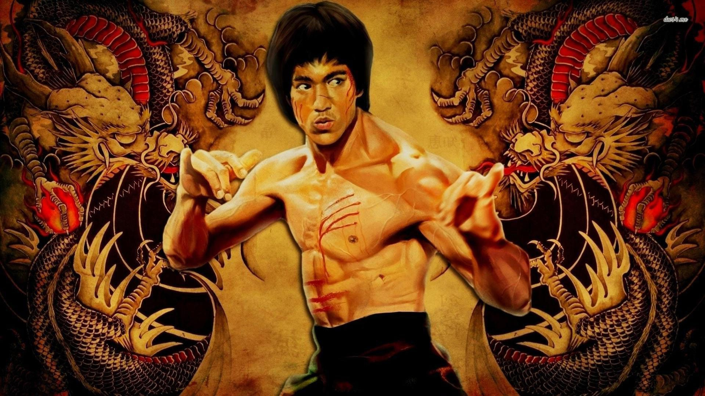

Isaiah decides that DRAAAAAAAAAKE is the one. Zay decides to scan through his many email's once more, and that's when he spot's a request from Saul Goodman asking to be his manager. Isaiah happily accepted his offer. Saul looked over Zay's contract with OVO to make sure he's not getting scammed. Saul approves the contract and the paper is signed. HOWEVER, Saul was too busy with his other two clients. Heisenberg(AKA Waltuh) and Money Maker Mike. Because of this Saul overlooked a key detail in the contract. “By signing this document, “Aubrey Graham (Drake)” will become the legal owner of Isaiah's Flow”. Isaiah and Drake would go on to produce their first and final hit single “Hotline Gi” . Drake cut Isaiah loose soon after that song and continued to use his flow. Zay fell off soon after because he could not legally use his own flow anymore. Despite hanging up the mic, he was not entirely hopeless. Isaiah would later change his name to “Bruce Lee” and end up becoming one of the most widely known and respected fighters throughout human history. Later on in life, Bruce would state in an interview, “DRAAAAAAKE? DRAAAAAAAAKE? The dude that got bodied by Pusha T? ” - Bruce Lee
